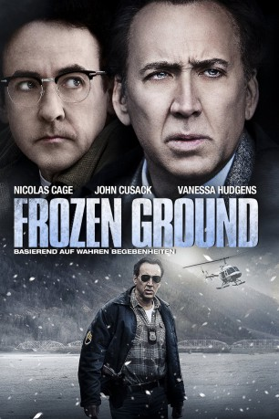

#2643 Frozen Ground
Alternativ: The Frozen Ground
 
 IMDB-Wertung: 6.4 / 10
IMDB-Wertung: 6.4 / 10  Metascore: 37
Metascore: 37 
Seit über zehn Jahren führt Robert Hansen ein bizarres Doppelleben: Seiner Familie gegenüber mimt er den treusorgenden Vater und liebenden Ehemann, doch in Wirklichkeit ist er ein Serienmörder, der seine Opfer, junge Mädchen, auf bestialische Weise zurichtet. Seit geraumer Zeit ist ihm der manische Polizist Sgt. Jack Halcombe auf der Spur. Bisher erfolglos. Als es der Stripperin Cindy Paulson gelingt, aus den Klauen des Psychopathen zu entfliehen, ergibt sich Halcombe endlich die Chance, Hansens Treiben ein Ende zu setzen. Doch Raubtiere sind dann am gefährlichsten, wenn sie sich in die Ecke gedrängt fühlen…
Jahr: 2013
Dauer: 105 Minuten
FSK: 16
Land: USA Studio: LionsgateTonspuren: DTS - ,
Untertitel: Deutsch,
Auflösung: 1080p (1920x800) Größe: 6594 MB
Genre: Thriller, Krimi, Geschichte, Biographie
Regisseur: Scott Walker
Drehbuch: Scott Walker
Soundtrack: Lorne Balfe
Darsteller:
 Nicolas Cage als Jack Halcombe
Nicolas Cage als Jack Halcombe Vanessa Hudgens als Cindy Paulson
Vanessa Hudgens als Cindy Paulson John Cusack als Robert Hansen
John Cusack als Robert Hansen Dean Norris als Sgt. Lyle Haugsven
Dean Norris als Sgt. Lyle Haugsven Gia Mantegna als Debbie Peters
Gia Mantegna als Debbie Peters- Robert Forgit als Sgt. Wayne Von Clasen
 Brad William Henke als Carl Galenski
Brad William Henke als Carl Galenski Michael McGrady als Vice Det. John Gentile
Michael McGrady als Vice Det. John Gentile- Katherine LaNasa als Fran Hansen
 Ryan O'Nan als Gregg Baker
Ryan O'Nan als Gregg Baker Kevin Dunn als Lt. Bob Jent
Kevin Dunn als Lt. Bob Jent Radha Mitchell als Allie Halcombe
Radha Mitchell als Allie Halcombe Matt Gerald als Ed Stauber
Matt Gerald als Ed Stauber Jodi Lyn O'Keefe als Chelle Ringell
Jodi Lyn O'Keefe als Chelle Ringell 50 Cent als Pimp Clate Johnson
50 Cent als Pimp Clate Johnson- Jason Collins als Det. Kyle Griston
 Kurt Fuller als D.A. Pat Clives
Kurt Fuller als D.A. Pat Clives- Craig Blair als Inlet Inn Manager
- Ron Holmstrom als Attorney Mike Rule
- Katie Wallack als Bobby Morehead
 Brett Baker als Lt. Pat Kasnick
Brett Baker als Lt. Pat Kasnick- Mark Robokoff als Dan Boyds
- Clara Danielle Engstrom als Halcombe's Daughter
- Tim Lacatena als Trooper Two
 Lydia Hull als News Anchor
Lydia Hull als News Anchor- Bostin Christopher als Al
- Kiki Warren als Candy Striper
 Mark Rhino Smith als Security Guard
Mark Rhino Smith als Security Guard- Kaya als Hansen's Dog
- Kevin T. Bennett als AST Detective , uncredited
- Cheyenne Buchanan als Man in Stairwell , uncredited
- Karl Glick als Police Officer , uncredited
- Bradford James Jackson als Trooper One , uncredited
- Erin Lindsay King als Flirty Girl , uncredited
- Cassandre Leigh als Police patron , uncredited
- Bryant Mainord als Strip Club Patron , uncredited
- Vasilika Vanya Marinkovic als Cocktail Waitress , uncredited
- Wayne Mitchell als Merrill Field Trooper , uncredited
- Lois Simenson als Records Clerk - Extra , uncredited
- Connor Rockom als Hansen Son
- Olga Valentina als Jodi Brandon
- Hillarie Putnam als Janice
- Leo Grinberg als Frank Rothschild
- Jeff Bell als Motel Officer
- Leonardo Walker als Halcombe Son
- Jill Bess als Janet
- Teresa Koop als Beryl
- Jonathan Minton als APD Officer #1
- A.J. Seims als Duty Officer
- Tom Skore als Dr. Dan Rodgers
Datei: X:\2013(A-F)\Frozen Ground (2013, FSK16, 1920x800).mkv seit 30.11.2015
Festplatte: HD 2012(N-Z)-2013(A-H)
 Es gibt insgesamt 127 Filme in der Gruppe '2013(A-F)'
Es gibt insgesamt 127 Filme in der Gruppe '2013(A-F)'